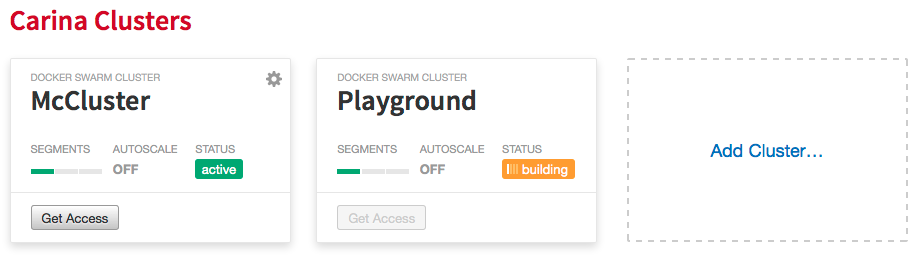

Think outside the container
A look at three fun ways to use Docker
Ash Wilson, Carolyn Van Slyck and Nick Silkey
Game Plan
- Docker refresher
- How the Cloud DNS team is using ChatOps
- How the Developer Experience team builds, tests and deploys our websites
- Teaching Docker with JupyterHub and Carina
Docker in 60 seconds
- Docker = Container Black Magic Voodoo
- Docker Image = A packaged application
- Minimal operating system
- Source code
- Dependencies
- Docker Container = An instance of an image
$ docker run nginx
Carina
Docker as a Service

getcarina.com